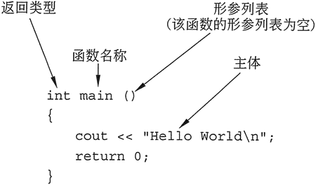
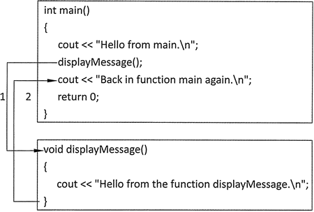
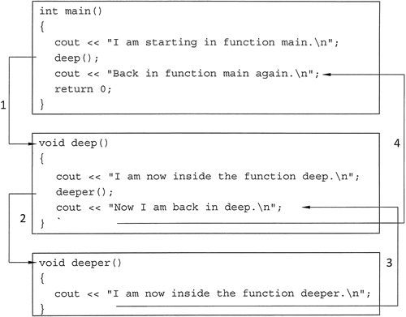
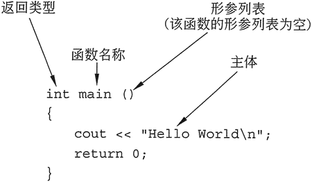
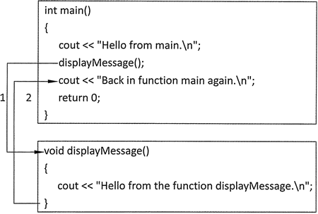
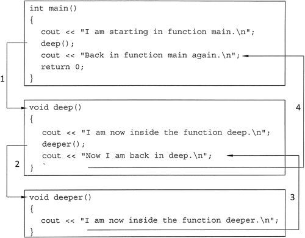

首页 > 编程笔记
C++函数定义和调用过程（超详细）
在创建函数时，必须编写其定义。所有函数定义包括以下组成部分：
图 1 显示了标有各组成部分的简单函数。

图 1 函数的组成部分
定义中的第一行称为函数头。现在来仔细看一看这 3 个部分。第一个部分是函数的返回类型，其次是函数名称，函数头的末尾则是一对括号。如果该函数有任何参数，则它们将排列在该括号中。当然，即使形参列表为空，括号也必须保留，正如图 1 所示。
然而，并不是所有函数都一定要返回值。某些函数只需执行一个或多个语句，然后返回。在 C++ 中，这样的函数称为空函数。下面显示的 displayMessage 函数就是一个空函数示例：
该函数的返回类型是 void。这意味着函数在完成执行后不返回值，并返回到调用该程序的部分。因为没有返回值，所以不需要 return 语句。当函数中的语句己经完成执行并且遇到结束函数的封闭大括号时，程序将自动返回。
现在来看一个程序，它包含了两个函数：main 和 displayMessage。
函数头是函数定义的一部分。它声明函数的返回类型、名称和形参列表。它不能用分号终止，因为函数的主体定义要跟在它后面。
函数调用是一个执行该函数的语句，所以它像所有其他 C++ 语句一样，以分号终止。
现在来看一下上面程序的执行流程。理所当然，它是从 main 函数开始的。当遇到调用 displayMessage 函数的语句时，程序分支到该函数并执行其语句。一旦 displayMessage 完成执行，则程序将返回到 main 函数，继续执行函数调用行后面的语句，如图 2 所示。

图 2 程序的执行流程
函数调用语句可用于诸如循环、if 语句和 switch 语句之类的控制结构中。例如，下面程序就把 displayMessage 函数调用放在了循环中：

图 3 以分层形式调用函数的程序执行路径
- 名称：每个函数都必须有一个名称。通常，适用于变量名称的规则同样也适用于函数名称。
- 形参列表：调用函数的程序模块可以向其发送数据。形参列表是保存传递给函数的值的变量列表。如果没有值传递给函数，则其形参列表为空。
- 主体：函数的主体是处理函数正在执行的任务的一组语句。这些语句包含在一组大括号中。
- 返回类型：函数可以将值发送回调用它的程序模块。返回类型是要发送回的值的数据类型。
图 1 显示了标有各组成部分的简单函数。

图 1 函数的组成部分
定义中的第一行称为函数头。现在来仔细看一看这 3 个部分。第一个部分是函数的返回类型，其次是函数名称，函数头的末尾则是一对括号。如果该函数有任何参数，则它们将排列在该括号中。当然，即使形参列表为空，括号也必须保留，正如图 1 所示。
空函数
如前所述，函数可以返回一个值。教程中介绍过的所有程序中的 main 函数都被声明为向操作系统返回一个 int 值。"return 0;" 语句使得当 main 函数完成执行时返回值 0。然而，并不是所有函数都一定要返回值。某些函数只需执行一个或多个语句，然后返回。在 C++ 中，这样的函数称为空函数。下面显示的 displayMessage 函数就是一个空函数示例：
void displayMessage()
{
cout << "Hello from the function displayMessage.\n";
}
该函数的名称是 displayMessage，意思是“显示消息”，它是一个描述性的名称，说明了函数的功能。函数就应该按这种方式命名，即通过名称揭示其功能。因为该函数不需要接收任何信息以执行其任务，所以它的括号中没有形参列表。该函数的返回类型是 void。这意味着函数在完成执行后不返回值，并返回到调用该程序的部分。因为没有返回值，所以不需要 return 语句。当函数中的语句己经完成执行并且遇到结束函数的封闭大括号时，程序将自动返回。
调用函数
调用函数将导致函数的执行。函数 main 在程序启动时自动调用，但所有其他函数必须由函数调用语句执行。当一个函数被调用时，程序分支到该函数并执行其主体中的语句。现在来看一个程序，它包含了两个函数：main 和 displayMessage。
// This program has two functions: main and displayMessage. #include <iostream> using namespace std; // Function prototype void displayMessage(); //mian函数 int main() { cout << "Hello from main.\n"; displayMessage(); // Call.displayMessage cout << "Now we are back in the main function again. \n"; return 0; } void displayMessage() { cout << "Hello from the displayMessage function.\n"; }程序输出结果:
Hello from main.
Hello from the displayMessage function.
Now we are back in the main function again.
displayMessage();
请注意函数调用的形式，它只是函数的名称，后跟一组括号和分号。现在使用它来和函数头比较一下：- 函数头 -> void displayMessage；
- 函数调用-> displayMessage();
函数头是函数定义的一部分。它声明函数的返回类型、名称和形参列表。它不能用分号终止，因为函数的主体定义要跟在它后面。
函数调用是一个执行该函数的语句，所以它像所有其他 C++ 语句一样，以分号终止。
请注意，函数调用不会包括返回类型。
可能有人会奇怪，上面程序中的第 6 行语句是做什么用的？它被称为函数原型，它的任务很简单，就是让编译器知道，在程序的后面将出现这个函数。它看起来很像是函数头，但它其实是一个语句，所以是以分号结束的。现在来看一下上面程序的执行流程。理所当然，它是从 main 函数开始的。当遇到调用 displayMessage 函数的语句时，程序分支到该函数并执行其语句。一旦 displayMessage 完成执行，则程序将返回到 main 函数，继续执行函数调用行后面的语句，如图 2 所示。

图 2 程序的执行流程
函数调用语句可用于诸如循环、if 语句和 switch 语句之类的控制结构中。例如，下面程序就把 displayMessage 函数调用放在了循环中：
#include <iostream>
using namespace std;
// Function prototype
void displayMessage();
int main()
{
cout << "Hello from main.\n";
for (int count = 0; count < 3; count++)
{
displayMessage() ; // Call displayMessage
}
cout << "Back in function main again.\n";
return 0;
}
void displayMessage()
{
cout << "Hello from the function displayMessage.\n";
}
程序输出结果：
Hello from main.
Hello from the displayMessage function.
Hello from the displayMessage function.
Hello from the displayMessage function.
Back in function main again.
#include <iostream>
using namespace std;
// Function prototype
void deep();
void deeper();
int main()
{
cout << "工 am starting in function main.\n";
deep(); // Call function deep
cout << "Now I amback in function main again.\n";
return 0;
}
void deep()
{
cout << "I am now inside the function deep.\n";
deeper(); // Call function deeper
cout << "Now I am back in deep. \n";
}
void deeper()
{
cout << "I am now inside the function deeper.\n";
}
程序输出结果：
I am starting in function main.
I am now inside the function deep.
I am now inside the function deeper.
Now I am back in deep.
Now I am back in function main again.

图 3 以分层形式调用函数的程序执行路径
关注公众号「站长严长生」，在手机上阅读所有教程，随时随地都能学习。内含一款搜索神器，免费下载全网书籍和视频。

微信扫码关注公众号